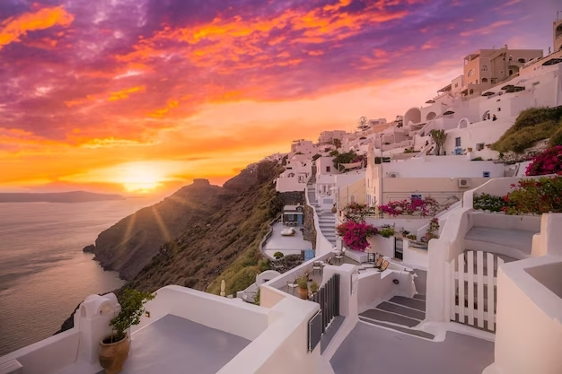
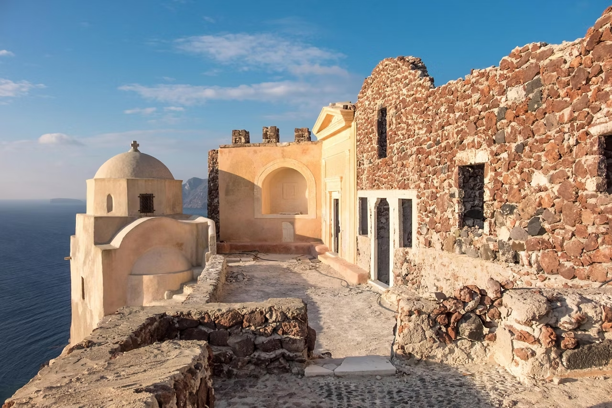

Esta icónica isla del mar Egeo es famosa por sus pintorescos pueblos de casas encaladas con techos azules, construidos sobre acantilados con vistas impresionantes al mar. Santorini es una mezcla única de belleza natural, historia antigua y cultura vibrante.
Atardeceres en Oia
Considerados entre los mejores del mundo, los atardeceres en Santorini, especialmente desde el pueblo de Oia, son una experiencia mágica que no querrás perderte.
Ruinas antiguas
Explora Akrotiri, una ciudad antigua bien preservada que data de la civilización minoica, y camina por las calles de Fira para sumergirte en la historia de la isla.
Gastronomía griega

Degusta especialidades locales como la fava (puré de guisantes amarillos), ensaladas frescas con queso feta, y vinos únicos producidos en viñedos volcánicos.